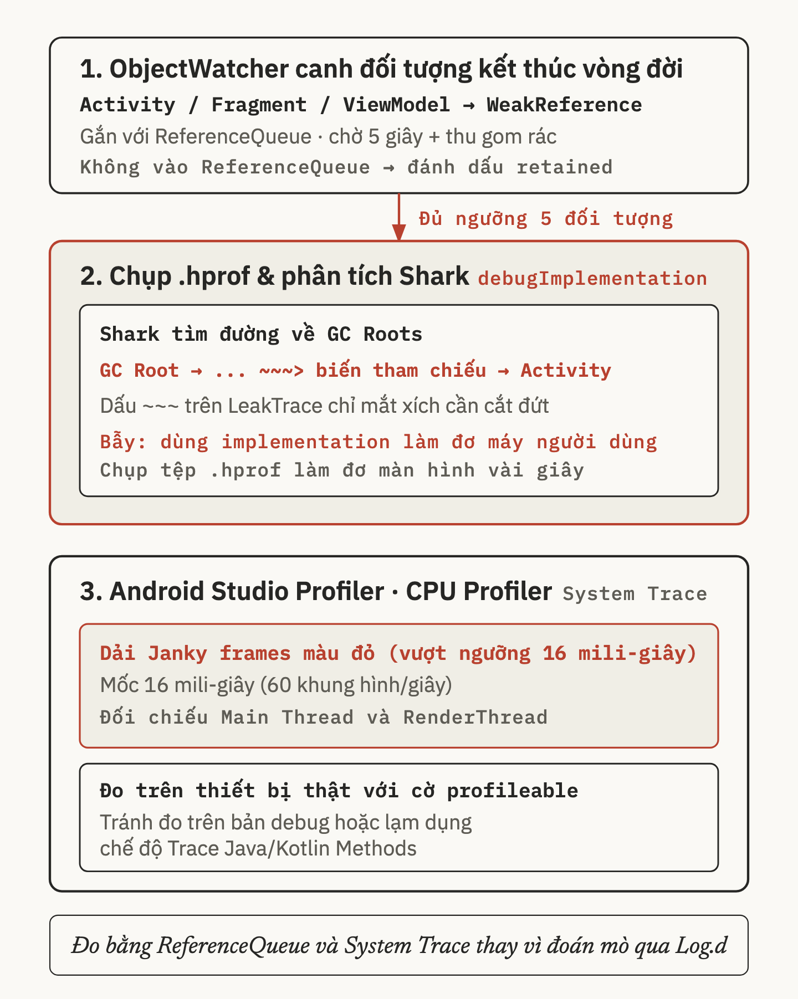

Debug: LeakCanary, Profiler
Bản 30 giây
Khi ứng dụng cuộn giật hay ngốn RAM dần rồi sập, việc đọc code bằng mắt hoặc rải lệnh in log chỉ là đoán mò. Công cụ LeakCanary tự bắt màn hình đã đóng nhưng chưa được dọn, còn Android Studio Profiler đo CPU, RAM và thời gian vẽ khung hình. Nhờ số đo thật, bạn chỉ thẳng được đối tượng nào đang giữ RAM hoặc hàm nào đang chiếm luồng chính.
Cần biết trước
Vấn đề buộc nó ra đời
Trước năm 2015, muốn tìm chỗ rò rỉ bộ nhớ, bạn phải mở DDMS (Dalvik Debug Monitor Server). Bạn phải tự chụp bộ nhớ rồi dò bằng mắt. Vì quá mất công, hầu hết lỗi rò rỉ chỉ lộ ra khi người dùng thật bị sập ứng dụng hàng loạt vì OutOfMemoryError.
Năm 2015, kỹ sư Pierre-Yves Ricau tại Square mở mã nguồn thư viện LeakCanary. Thư viện này tự động canh các màn hình vừa đóng. Nó tự chụp bộ nhớ khi thấy đối tượng kẹt lại và chỉ ra tham chiếu gây rò rỉ.
Đến tháng 10 năm 2017, Google phát hành Android Studio 3.0 và thay thế DDMS bằng bộ Android Profiler hợp nhất. Công cụ mới cho phép đo trực tiếp CPU, bộ nhớ, mạng và năng lượng trên cùng một trục thời gian thực.
Nó thực sự là cái gì
Gỡ lỗi hiệu năng không phải là rải lệnh Log.d khắp nơi để tính giờ chạy hàm. Thực chất là hai cơ chế lấy bằng chứng từ hệ thống. LeakCanary dùng hàng đợi tham chiếu yếu của máy ảo để bắt đối tượng rò rỉ trên Heap. Còn Profiler thu thập vết thời gian thực của luồng để tìm khung hình vượt ngưỡng 16 mili-giây (mốc 60 khung hình/giây).
Cơ chế

Khi Activity, Fragment hay ViewModel kết thúc vòng đời, ObjectWatcher của LeakCanary bọc nó vào WeakReference (tham chiếu yếu) gắn với hàng đợi ReferenceQueue. Sau 5 giây và một đợt thu gom rác, nếu tham chiếu đó không vào ReferenceQueue, đối tượng bị đánh dấu là kẹt lại (retained). Đủ ngưỡng 5 đối tượng khi ứng dụng mở, LeakCanary chụp bộ nhớ ra tệp .hprof để Shark tìm đường về GC Roots. Với lỗi giật (jank), bạn mở CPU Profiler ghi System Trace để đối chiếu dải Janky frames màu đỏ với Main Thread và RenderThread.
Đánh đổi
Bạn có bằng chứng chính xác tới từng biến tham chiếu và từng mili-giây giữ luồng mà không cần đoán mò. Đổi lại, việc chụp tệp .hprof làm đơ màn hình vài giây, còn chế độ ghi vết Trace Java/Kotlin Methods làm ứng dụng chạy chậm hơn hẳn.
Nguyên lý gốc
Không bao giờ tối ưu hay sửa lỗi hiệu năng khi chưa có công cụ đo chỉ ra đúng điểm nghẽn thực tế.
Key insight
LeakCanarykhông quét toàn bộ RAM liên tục, mà chỉ canh những đối tượng đã đóng nhưng không rơi vàoReferenceQueuesau khi dọn rác.
Khuôn mẫu chuẩn
// build.gradle.kts: chỉ gắn LeakCanary vào bản debug
dependencies {
debugImplementation("com.squareup.leakcanary:leakcanary-android:2.14")
}
// Theo dõi thêm một đối tượng tùy chỉnh khi nó vừa đóng
fun onSessionClosed(session: UserSession) {
AppWatcher.objectWatcher.expectWeaklyReachable(
watchedObject = session,
description = "UserSession đã đóng nhưng chưa được thu hồi"
)
}
Bẫy & ranh giới
Nếu gắn LeakCanary bằng implementation thay vì debugImplementation, nó sẽ đi vào bản phát hành và tự chụp bộ nhớ làm đơ máy người dùng. Cũng đừng đo tốc độ khung hình trên bản debug hay lạm dụng Trace Java/Kotlin Methods, vì chi phí ghi vết sẽ báo giật giả. Bạn hãy đo bằng System Trace trên thiết bị thật với bản cài bật cờ profileable. Khi LeakCanary báo lỗi, triệu chứng là chuỗi LeakTrace có dấu ngã ~~~ nằm ngay dưới biến tham chiếu bạn cần cắt đứt.
Câu hỏi thực chiến
Hỏi: Có nên đưa LeakCanary vào bản release để thu thập lỗi rò rỉ bộ nhớ từ máy người dùng thật không?
Không. Mỗi lần LeakCanary chụp tệp .hprof và chạy bộ phân tích Shark, ứng dụng sẽ bị đơ cứng vài giây và tốn nhiều RAM. Bạn chỉ được gắn nó qua debugImplementation để bắt lỗi ngay trong lúc phát triển và kiểm thử nội bộ.
Hỏi: Khi đọc một báo cáo LeakTrace dài chục dòng của LeakCanary, làm sao biết phải sửa ở dòng nào?
Bạn đừng sửa ở dòng cuối cùng chứa Activity bị rò rỉ, cũng không sửa được dòng đầu tiên là GC Root của hệ thống. Hãy tìm dòng có gạch chân dấu ngã ~~~, vì đó là mắt xích cuối cùng còn sống đang giữ nhầm đối tượng đã chết.
Hỏi: Vì sao đo hiệu năng trên bản debug bằng chế độ Trace Java/Kotlin Methods lại hay cho con số sai lệch?
Vì chế độ Trace Java/Kotlin Methods chèn mã ghi nhận vào đầu và cuối mọi hàm, làm những hàm nhỏ gọi lặp bị đội thời gian lên. Để tìm khung hình giật trên 16 mili-giây sát thực tế nhất, bạn hãy dùng System Trace trên bản build đã bật cờ profileable.
Ý bắt buộc khi giải thích lại
- Giải thích được 4 bước của LeakCanary: bọc đối tượng hủy bằng
WeakReference+ReferenceQueue, chờ 5 giây, chụp.hprofvà dùngSharktìm đường vềGC Roots. - Nêu được cách dùng
System TracetrongCPU Profilerđể tìm khung hình vượt ngưỡng 16ms trênMain ThreadvàRenderThread. - Chỉ ra được lý do chỉ dùng
debugImplementationcho LeakCanary và cách đọc dấu~~~trên chuỗiLeakTrace. - Viết lại được khuôn mẫu chuẩn từ trí nhớ.
Nguồn
- Profile your app performance — Android Developers
- Detect jank with CPU Profiler — Android Developers
- LeakCanary documentation — Square
- How LeakCanary works — Square